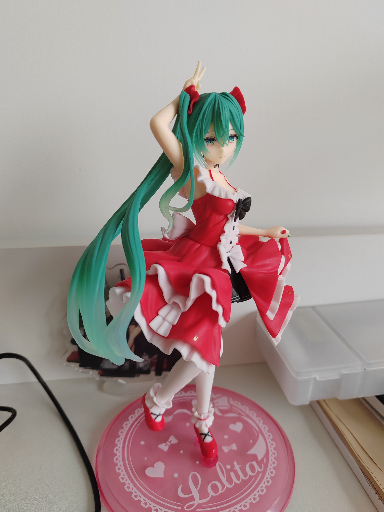

Microblog
A place to ramble on in bursts less than 140 characters.
- 2024/9/21 13:12
老实了，在我把排版工具彻底做完前还是就用这个框架吧。
- 2024/9/16 19:50
越和别人接触，越对自己厌恶到无以复加。
- 2024/9/4 10:07
在学校可持续性自卑和内耗，这辈子彻底有了。
不过面对那些语言大佬，我这种一无是处的菜狗大抵也只有膜拜/学习的分。
不过我更觉得我这种人就应该去死，反正我的出⽣早就奠定了乐⼦性悲剧的基调。
- 2024/8/26 22:41
Bill Wurtz on how to unlearn something:
as long as the original thing is not true, just learn something true in place of it, and continue living with that new true thing for a while. eventually you will forget about the original false thing. it will be much more difficult if the original thing actually is true.
- 2024/8/25 23:13
😀😃😄😁😆😅😂
Just An Emoji test.
- 2024/8/19 18:37
一个“成功”大学生所需要的品质，比如头脑聪明，比如有想法，比如耐得住寂寞，这些品质放在任何行业和领域，都是非常宝贵的品质，然后大学要求大家用这些品质，一起耗费好几年青春换得一个大概自己都没兴趣的职位的入场券。
仔细想想挺可悲的。
- 2024/8/14 19:40
终于是想起来自己还有个网站了，今天（算是）搞定了代码渲染：
(display "Ciallo～(∠・ω< )⌒☆ ")
以后可以写点计算机相关的东西了。
- 2024/7/13 14:17
突发奇想开始做视觉小说，我糟糕的文笔和贫瘠的想象力让我剧情进度和乌龟爬差不多了。
搬完家后一时半会还没有网，看来这条只能之后再同步到博客站点上了 :)
- 2024/7/10 16:10
给博客的后端加上了插入图片的功能，进行一些微小的测试。 
- 2024/7/9 12:17
逛知乎看到一个叫“为什么很多人高考结束后进入大学就堕落了？"的问题，顿感幸运。
幸好我还没进大学就已经堕落了。
- 2024/7/8 21:10
All rules except rules about rules being prohibited are prohibited.
It makes sense to me, I guess.
- 2024/7/8 11:39
I've added support for "microblog" postings to my weblog. This is the first such posting.